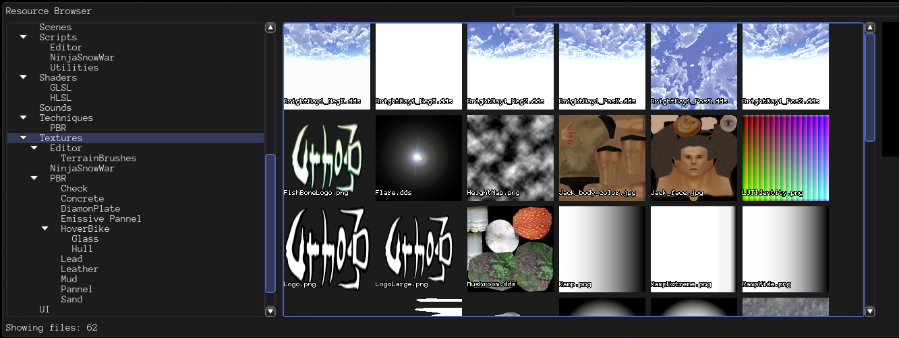

WangKai

There are many doubts and arguments about Urho’s editor. I think everyone can modify the editor and make it suitable for small game development. The only problem to meet that is some time and energy invested. It makes sense for the core dev team to save them for the engine code base. Though lacking of a script debugger it’s really a pain in the neck and you will find yourself waving a wood in the stone age